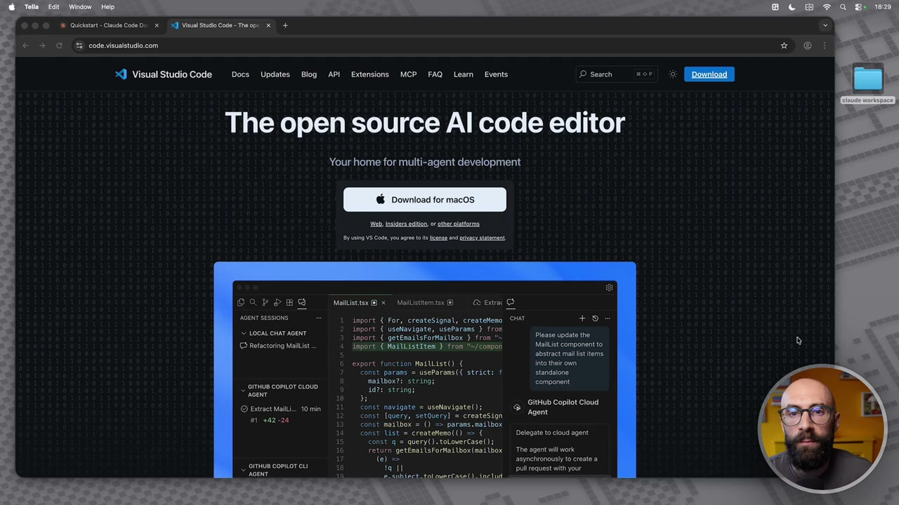
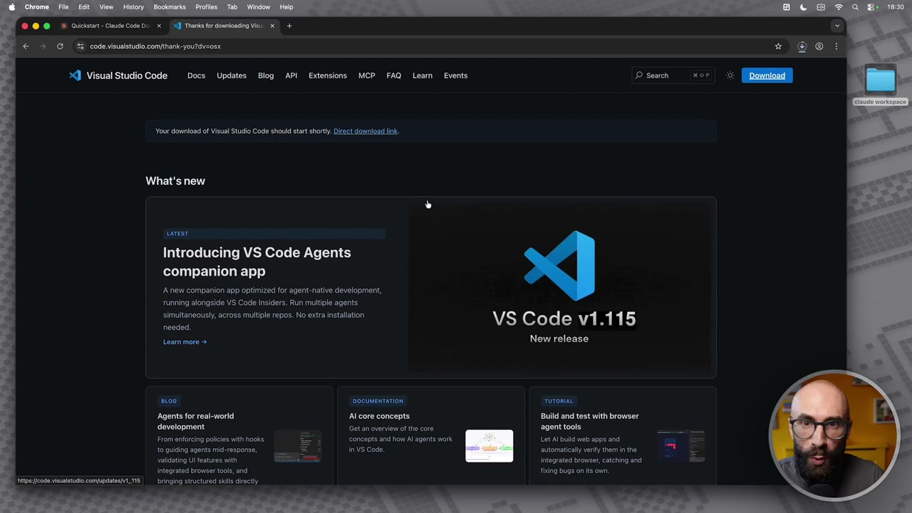
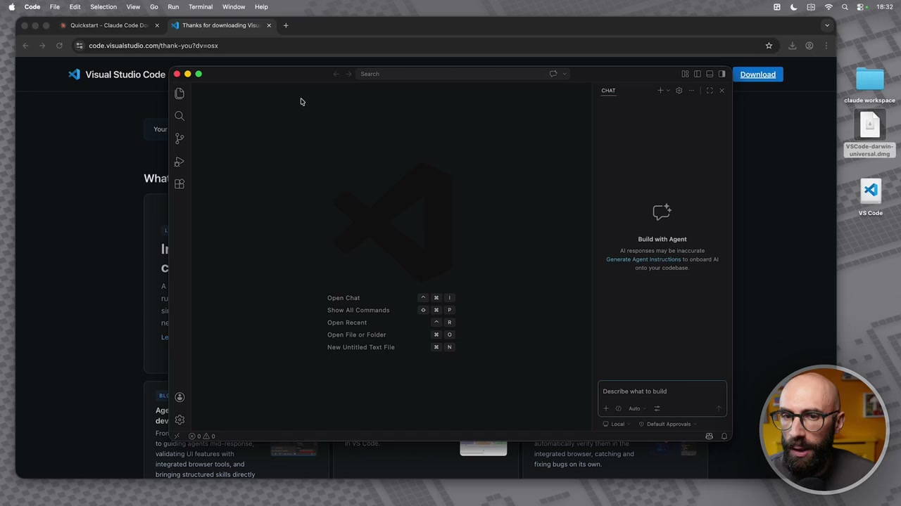
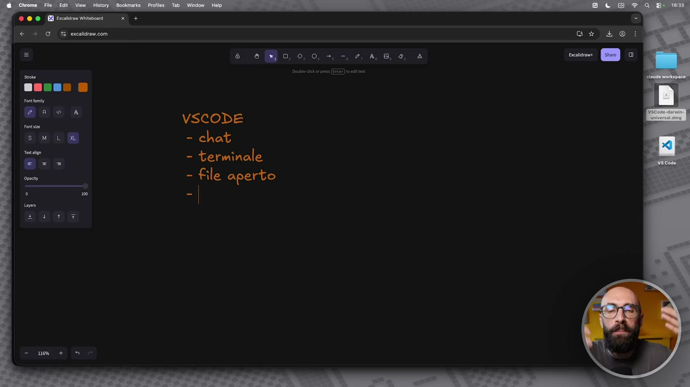
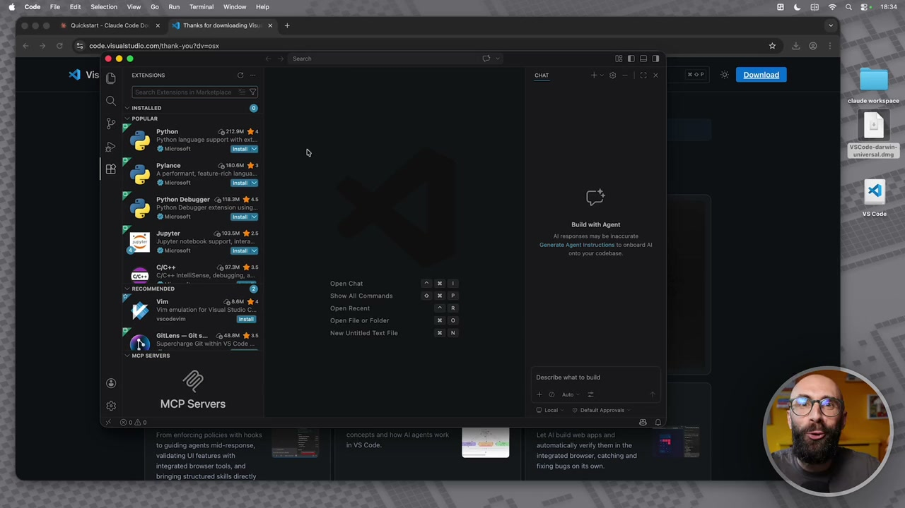

OCR: © © ©» Queistr- Claude Code Do. x (N Vis Studio Code-The api Xi + È > % codevisulstudiocom 3 Visual Studio Code —Docs Updates Blog API Extensions MCP FAQ Leam Events The open source Al code editor Your home for multi-agent development Ms insiders edco. or be olatceme. DAPPEB Mast @ x Mallisttomi® Gesta SENI neo, 1 import { For, createSignal, createtteno CHAT +9 ER È import { uselavigate, cseParans } tr import { getEmailsForMailbox } fros rene iaia] CO Retactoing Mist TRRSPE RR IISMitea teo fees © Maitcomponentto abstract matie export function MattList() { sio icon mailbox: stringi ama omue comorciovo Ring gr ppt Sini © Extract Mall... 10 min const navigate = usenavigate(); Ta gna Coniot ciua 3. const nallbox 2 () => porasssnziibo: ont List = crentetemot0) 25 (|. | Delgateto cod agent const = query) stotovercase(); Feturn ettnattsFortai box (mailbox. The agent ilnok (gl melronous o creste _ cima comor ti TRA icon "
Vi ho promesso che avremmo utilizzato Cloud Code, la maggior parte del tempo, non dentro il terminale, ma in un posto più facile da utilizzare. Questo posto si chiama Visual Studio Code, abbreviato con VS Code. È uno strumento gratuito e open source e nasce come un editor per il codice. Infatti, se uno guarda questa schermata si spaventa e dice, Raff, ma come? Ma tu mi hai promesso che è più facile. Invece avevi tutta questa roba. Non vi preoccupate, perché noi non faremo codice. Questa cosa la ripeto all'infinito nel corso, perché le persone sono terrorizzate quando sentono Cloud Code, perché purtroppo nel nome c'è quella parolina code che spaventa. Noi useremo questo strumento, ma non per farci codice, per farci tutto il resto. Tutto quello che abbiamo detto. Documentazione, analisi dati, presentazioni, PDF, tutto quello che volete voi. Tutta la parte di lavoro intellettuale, barra d'ufficio, barra creativo. Quindi la prima cosa che facciamo è lo scarichiamo. Ovviamente io sono su macOS e quindi mi vado a scaricare Visual Studio per macOS.

OCR: © @ ©» Oucistar- Cute Code Do x (N Traniator domini visi x + € > G % codevisualstudio comihank-youtdv=on @ Visual Studio Code —Docs Updates Blog API Extensions MCP FAQ Leam Events Your doma of Visual Studlo Code shouid start shorty. Direct domioad ink. rest Introducing VS Code Agents ‘companion app ‘A new companion app optimized for agent-native development, running alongside VS Code Insiders. Run multiple agents Simutanegusly, cross mule repos. No extra instalion VS Code v1.115 needed. Leammore + New release nico DocuMENTATIONI uTORIAL ‘Agents for real-world Al core concepts. Build and test with browser agent tools. development Gotan overvien o the core Lot Abu web apps and From enforcing policies th hooks to quiding agents mid-response, automatialy verify them in the validating I features th == integrated browser, catching and Intagrated browser tools, and ing bugs on ts on Bringing structures se iocty bai
Voi, se state utilizzando Windows, scaricate la versione per Windows. Adesso qua sta scaricando un attimino, ci metterà qualche secondo, quindi metto una piccola pausa. Appena finito di scaricare lo installiamo insieme e lo configuriamo. Allora, eccolo qua. Sul desktop c'ho la mia bella iconcina di VS Code. Su Mac, sapete, si installano le cose la maggior parte dei casi in questo modo. Quindi semplicemente trascinandoli abbiamo fatto un'installazione. Su Windows avete la procedura di installazione e così via. Aspettiamo qualche secondo che finisce di essere installato. La prima cosa che faremo adesso è lo avviamo. Quindi chiudo qua e lo lancio. Lo potete lanciare in vari modi. Lo faccio in modo molto molto semplice, giusto per farvelo vedere. Quindi lancio VS Code, ma spero che sappiate come lanciare un'app dentro macOS, dentro il vostro computer. Adesso VS Code si è aperto in questo modo, ok? Adesso qua c'è la procedura avanzata e così via. Per un attimo chiudiamola questa cosa, perché non voglio che vi spaventi.

OCR: ®© ©» Queisi- Cud code De x € 309 i. code visualstudio comfihank-youtdv=osx ] Visual Studio Code ® ® © (È) ni @ Age devi SS For x @oAd toquiò Valigaing UI features th Integrated browser tools, and bringing structures ss ciocty 3 Thank or domncano visi x + Open chat Show All Commande Open Fl or Folder c Build with Agent Generata Agent instveone to onora A | scrive via to nua integrated browse, catehing and hang bugs on its own.
Dovete immaginare questo luogo, quindi VS Code, come un posto all'interno del quale voi avete vari blocchi. Per questo io mi apro un attimo la nostra bella whiteboard di prima, che stiamo usando in alcune lezioni. Questo non l'ho preparato prima, lo scrivo adesso al volo perché voglio farvi capire questa cosa. Diciamo che voi quando siete dentro il vostro bel VS Code, qual è il vantaggio di usare VS Code? Allora, innanzitutto voi potreste utilizzare VS Code, ma in realtà ci sono vari tool per fare questa roba qua. Quindi qualcuno invece di VS Code potrebbe usare Antigravity, che pure è molto diffuso. Tra l'altro Antigravity è molto molto simile, quindi se avete installato Antigravity potete fare le stesse cose che vi farò vedere adesso. O ce ne sono altri. Abbiamo in un unico, diciamo così, in un unico luogo e in un unico contenitore. Ci abbiamo la chat, ci abbiamo il terminale, ci abbiamo il file aperto, ok? E ci abbiamo, mettiamola così, il file system, lo potrei chiamare.

OCR: VSCODE - chat - terminale
Chiamiamole però il workspace, cartelle. Ho sempre paura ad utilizzare termini in inglese troppo complicate, che qualcuno mi dice no, mi avevi promesso che era facile, perché hai detto workspace, le cartelle, ok? Quindi la comodità di avere VS Code è che dentro un unico posto, un'unica app, che tra l'altro è pure gratuita, faremo tutte queste cose. Quindi apriamo la nostra chat di, diciamo, di Cloud Code, ci sono dei file aperti sui quali stiamo lavorando. Sulla sinistra avevamo tutte le nostre belle cartelline, invece di tenere queste cose sparpagliate tra vari posti, ok? Questo è giusto per farvi capire un attimo questo questo passaggio. Quindi dove siamo? Apriamoci di nuovo il nostro bel VS Code, ce l'abbiamo qua, ok? La prima cosa che faremo, VS Code diciamo, dentro c'è una serie di cose che si possono installare. Diciamo le estensioni. Le estensioni sono dei pezzi aggiuntivi, no? Come dei plugin, che gli aggiungono funzionalità. La prima cosa che noi installeremo, qual è? Cloud Code, perché c'è un'estensione di Cloud Code per il nostro VS Code.
